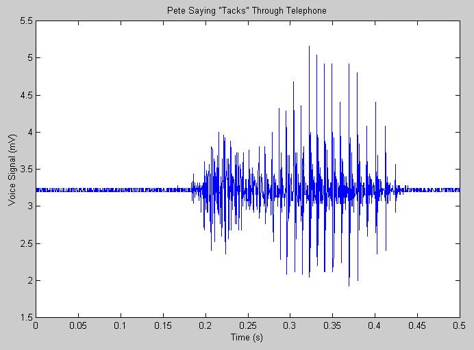
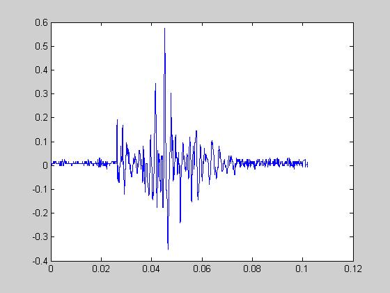

| Pete says "Tacks" |
|---|
|  |
| Matt says "Tacks" |
|  |
| HTML Tags: | Explanation: |
|---|---|
| <h1> | Header level 1, used to introduce the document. |
| <h2> | Header level 2, used to introduce a new section. |
| <ul> & <li> | Un-numbered list and list entry, used to delineate the e-mail addresses. |
| <table> | Tables, used for this section and the graphs. |
| <a href="mailto:foo@foo.foo"> | e-mail link. |
| <img src="file.foo"> | Images. |
| <em> | Emphasis (italics). |
| <strong> | Strong (bold). |
| < | Less than escape code. |
| > | Greater than escape code. |